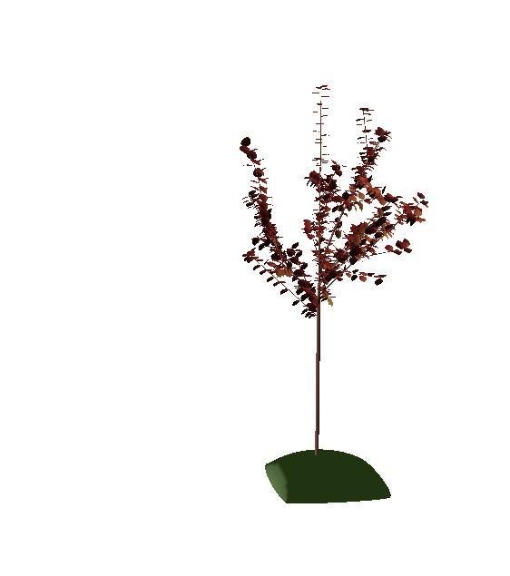

1.3. Results and Code validation¶
1.3.1. Results¶
Here below are some pictures of the simulation. For instance, after two years and a half, we obtained this visual results:


|  | |
1.3.2. Code validation¶
Here below are some numbers that can be compared
1.3.2.1. counts¶
Results from MAppleT (3 years)
#shorts longs florals mediums len_16_to_25 len_26_to_40 len_over_40 fruits
0 0 0 0 0 0 0 0 0
1 6 1 0 1 1 0 5 0
73 34 43 0 23 22 11 1 0
0 0 0 0 0 0 0 0
0 7 1 0 1 1 2 4
49 33 72 0 31 17 14 2
Results from stocatree (5 years)
#shorts longs florals 0 mediums len_16_to_25 len_26_to_40 len_over_40 fruits
1995-01-01 0 0 0 0 0 0 0 0
1996-01-01 1 6 1 0 1 1 0 5
1997-01-01 48 38 52 0 19 11 25 2
1998-01-01 300 58 238 0 62 45 11 2
1999-01-01 557 30 245 0 119 27 3 0
1.3.2.2. Trunk size¶
Trunk Radius in meters
| year 1 | 0.00308 | TODO |
| year 2 | 0.00679 | TODO |
| year 3 | 0.01506 | 1.52 cm |
| year 4 | 0.023 | TODO |
Trunk surface
| year 1 | 2.9 10-5 | |
| year 2 | 0.000144 | TODO |
| year 2 | 0.000726 | 0.000734 |
| year 4 | 0.0017 | TODO |
import numpy
import pylab
data = numpy.loadtxt('../data/trunk.dat', converters={0:lambda x:1})
pylab.clf();
pylab.plot(1994+data[:,1]/365, 100* data[:,2]);
pylab.xlabel('Time(days)');
pylab.ylabel('Trunk radius (cm)');
#pylab.savefig('trunk_radius_versus_time.png')
[`source code <..\plot_directive\pyplots/trunk_radius_versus_time.py>`__, `hires.png <..\plot_directive\pyplots/trunk_radius_versus_time.hires.png>`__, `pdf <..\plot_directive\pyplots/trunk_radius_versus_time.pdf>`__]

1.3.2.3. Fruits¶
[`source code <..\plot_directive\pyplots/fruit.py>`__, `hires.png <..\plot_directive\pyplots/fruit.hires.png>`__, `pdf <..\plot_directive\pyplots/fruit.pdf>`__]

1.3.2.4. Units¶
Unlike MAppleT, stocatree does not used a specific units module to manage physical units. Units are in S.I. that is meters, kilograms. However, for convenience, the time units are currently set in days.
Section author: Thomas Cokelaer